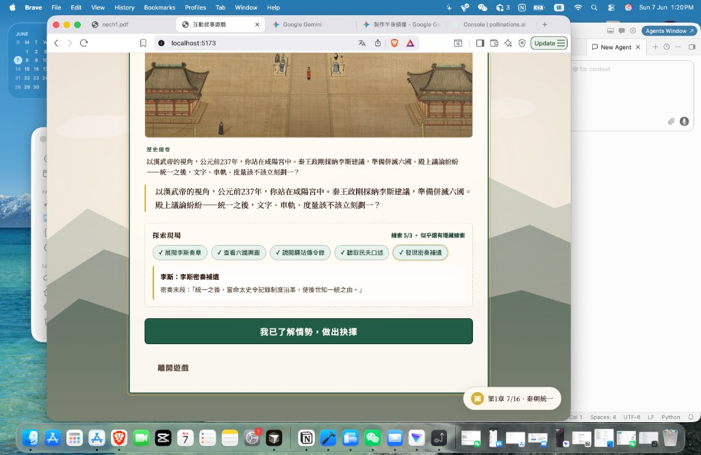

第一章 · 咸陽宮探索現場
左：現況（線索在繪卷下方按鈕） → 右：改版（在繪卷上點
脈動光點
）
點右邊光點可預覽線索卡滑出效果
現況
繪卷與線索分離

探索現場
玩家在下面撳 chip：
展閱李斯奏章 · 查看六國輿圖 · …
插畫本身不可點，缺乏「在現場搜證」感。
改版
繪卷熱點 + 底部線索卡
📜
展閱李斯奏章
🗺️
查看六國輿圖
🏇
調閱驛站傳令錄
👷
聽取民夫口述
🔒
密奏補遺（隱藏）
👴
重訪 · 老吏回憶
🛞
重訪 · 車軌標記
點選繪卷上的光點
，線索卡會在這裡顯示（實作時改為底部滑出 sheet）
模擬：已讀奏章 → 顯示密奏
模擬：第二次重玩
熱點座標一覽（寫入 JSON 的 x / y 百分比）
展閱李斯奏章
x:48 y:34
— 殿中議事
查看六國輿圖
x:72 y:30
— 右側展卷
調閱驛站傳令錄
x:24 y:32
— 左側廂房
聽取民夫口述
x:50 y:72
— 前景馳道
密奏補遺
x:86 y:20
— 讀奏章後解鎖
重訪 · 老吏
x:14 y:48
— 殿柱
重訪 · 車軌
x:84 y:78
— 殿外馳道